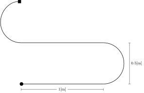

Clase 14
Semana 17 - 20/08/2025
Debe estar parametrizado al menos el radio de las ruedas de tracción y la separación de las mismas
<?xml version="1.0"?>
<robot name="diffbot" xmlns:xacro="http://www.ros.org/wiki/xacro">
<!-- ... -->
<xacro:property name="wheel_radius" value="0.035"/>
<xacro:property name="wheel_sep" value="0.135"/>
<!-- ... -->
<link name="left_wheel">
<!-- ... -->
<collision>
<origin xyz="0 0 0" rpy="${pi/2} 0 0"/>
<geometry>
<cylinder radius="${wheel_radius}" length="${wheel_width}"/>
</geometry>
</collision>
<xacro:inertial_cylinder mass="${wheel_mass}" length="${wheel_width}" radius="${wheel_radius}">
<origin xyz="0 0 0" rpy="${pi/2.0} 0 0"/>
</xacro:inertial_cylinder>
</link>
</robot>description.launch.py
from launch import LaunchDescription
from launch.actions import DeclareLaunchArgument
from launch.conditions import IfCondition
from launch.substitutions import Command, PathJoinSubstitution, LaunchConfiguration, EqualsSubstitution
from launch_ros.actions import Node
from launch_ros.substitutions import FindPackageShare
def generate_launch_description():
# Ubicación del paquete y del archivo URDF
urdf_path = PathJoinSubstitution(
[FindPackageShare("diffbot_description"), "urdf", "diffbot_description.urdf.xacro"]
)
# Procesar archivo URDF
urdf = Command(['xacro ', urdf_path])
# Publicar el 'robot description'
node_robot_state_publisher = Node(
package = 'robot_state_publisher',
executable = 'robot_state_publisher',
output = 'screen',
parameters=[{
'robot_description': urdf
}]
)
# Parámetro para ejecutar el 'joint_state_publisher_gui'
testing_ = DeclareLaunchArgument(
'testing', default_value='true'
)
node_joint_state_publisher_gui = Node(
condition = IfCondition(
EqualsSubstitution(LaunchConfiguration('testing'), 'true')
),
package = 'joint_state_publisher_gui',
executable = 'joint_state_publisher_gui',
output = 'screen'
)
# RViz
node_rviz2 = Node(
condition=IfCondition(
EqualsSubstitution(LaunchConfiguration('testing'), 'true')
),
package = 'rviz2',
executable = 'rviz2',
)
return LaunchDescription([
testing_,
node_robot_state_publisher,
node_joint_state_publisher_gui,
node_rviz2,
])Dependencias:
xacro,robot_state_publisher,joint_state_publisher,rviz2
<!-- ... -->
<package format="3">
<name>diffbot_description</name>
<version> .. </version>
<description> .. </description>
<!-- ... -->
<exec_depend>xacro</exec_depend>
<exec_depend>robot_state_publisher</exec_depend>
<exec_depend>joint_state_publisher_gui</exec_depend>
<exec_depend>rviz2</exec_depend>
<!-- ... -->
</package>ros_gz_bridge y use_sim_timeros2_controlEditar el archivo de definición del robot [..] de forma tal que las juntas correspondientes a las ruedas de tracción reciban comandos de velocidad y devuelvan el estado de posición y velocidad
ros2_control.xacro
<?xml version="1.0"?>
<robot xmlns:xacro="http://www.ros.org/wiki/xacro">
<ros2_control name="GazeboSystem" type="system">
<hardware>
<plugin>gz_ros2_control/GazeboSimSystem</plugin>
</hardware>
<joint name="front_left_wheel_joint">
<command_interface name="velocity" />
<state_interface name="position" />
<state_interface name="velocity" />
</joint>
<joint name="front_right_wheel_joint">
<command_interface name="velocity" />
<state_interface name="velocity" />
<state_interface name="position" />
</joint>
<joint name="caster_rotation_joint">
<state_interface name="position" />
</joint>
<joint name="caster_wheel_joint">
<state_interface name="position" />
</joint>
</ros2_control>
<gazebo>
<plugin filename="gz_ros2_control-system"
name="gz_ros2_control::GazeboSimROS2ControlPlugin">
<parameters>
$(find diffbot_control)/config/controllers.yaml
</parameters>
</plugin>
</gazebo>
</robot>ros2_controlCrear un paquete [..] con los parámetros necesarios para que el
controller_managerde ROS2 control cargue unJointStateBroadcastery dos controladores de velocidad de tipoJointGroupVelocityController, uno para cada rueda de tracción.
controllers.yaml
controller_manager:
ros__parameters:
update_rate: 30
joint_state_broadcaster:
type: joint_state_broadcaster/JointStateBroadcaster
left_wheel_velocity_controller:
type: velocity_controllers/JointGroupVelocityController
right_wheel_velocity_controller:
type: velocity_controllers/JointGroupVelocityController
left_wheel_velocity_controller:
ros__parameters:
joints:
- front_left_wheel_joint
command_interfaces:
- velocity
state_interfaces:
- position
- velocity
right_wheel_velocity_controller:
ros__parameters:
joints:
- front_right_wheel_joint
command_interfaces:
- velocity
state_interfaces:
- position
- velocityros2_controlEditar el archivo launch del ejercicio 3 para invocar al comando
load_controllerderos2_controly cargar los controladores del inciso anterior.
gazebo.launch.py
# ...
load_joint_state_controller = ExecuteProcess(
cmd=['ros2', 'control', 'load_controller', '--set-state', 'active', '--use-sim-time',
'joint_state_broadcaster'],
output='screen'
)
load_left_wheel_velocity_controller = ExecuteProcess(
cmd=['ros2', 'control', 'load_controller', '--set-state', 'active', '--use-sim-time',
'left_wheel_velocity_controller'],
output='screen'
)
load_right_wheel_velocity_controller = ExecuteProcess(
cmd=['ros2', 'control', 'load_controller', '--set-state', 'active', '--use-sim-time',
'right_wheel_velocity_controller'],
output='screen'
)
# ...Calcular la velocidad lineal y angular del robot y de las ruedas para que se complete:
- una trayectoria recta de 1[m] en 10 [s].
- una trayectoria circular con un radio de 0.5 [m] en sentido horario en 20 [s].
Una trayectoria recta de 1[m] en 10 [s].
V lineal del robot: \(v = \frac{1 \mathrm{[m]}}{10 \mathrm{[s]}} = 0.1 \mathrm{\left[\frac{m}{s}\right]}\)
V angular del robot: \(\dot{\theta} = 0\) (linea recta)
V lineal rueda derecha = V lineal rueda izquierda (linea recta): \[\upsilon_{L|R} = 0.1 \mathrm{\left[\frac{m}{s}\right]}\]
V angular rueda derecha = V angular rueda izquierda: \[\dot\phi_{L|R} = \frac{v}{r} = \frac{0.1 \mathrm{\left[\frac{m}{s}\right]}}{0.035 \mathrm{\left[\frac{m}{rad}\right]}} \approx 2.857 \mathrm{\left[\frac{rad}{s}\right]}\]
Una trayectoria circular con un radio de 0.5 [m] en sentido horario en 20 [s].
V angular del robot: \(\require{color} \dot{\theta} = \textcolor{Maroon}{-} \frac{2 \pi \mathrm{[rad]}}{20 \mathrm{[s]}} \approx \textcolor{Maroon}{-}0.314 \mathrm{\left[\frac{rad}{s}\right]}\)
V lineal del robot: \(v = \dot{\theta} \times \mathcal{R} = \textcolor{Maroon}{-} 0.314 \mathrm{\left[\frac{rad}{s}\right]} \times \textcolor{Maroon}{-} 0.5 \mathrm{\left[\frac{m}{rad}\right]} = 0.157 \mathrm{\left[\frac{m}{s}\right]}\)
V lineal rueda izquierda: \(\upsilon_L = \dot{\theta}(\mathcal{R}-\frac{b}{2}) = -0.314 (-0.5 - \frac{0.135}{2}) \approx 0.178 \mathrm{\left[\frac{m}{s}\right]}\)
V lineal rueda derecha: \(\upsilon_R = \dot{\theta}(\mathcal{R}+\frac{b}{2}) = -0.314 (-0.5 + \frac{0.135}{2}) \approx 0.135 \mathrm{\left[\frac{m}{s}\right]}\)
V angular rueda izquierda: \(\dot\phi_{L} = \frac{\upsilon_L}{r} = \frac{0.178 \mathrm{\left[\frac{m}{s}\right]}}{0.035 \mathrm{\left[\frac{m}{rad}\right]}} \approx 5.09 \mathrm{\left[\frac{rad}{s}\right]}\)
V angular rueda derecha: \(\dot\phi_{R} = \frac{\upsilon_R}{r} = \frac{0.136 \mathrm{\left[\frac{m}{s}\right]}}{0.035 \mathrm{\left[\frac{m}{rad}\right]}} \approx 3.88 \mathrm{\left[\frac{rad}{s}\right]}\)
Examinar la definición de los mensajes de tipo
geometry_msgs/Twisty describir cuál sería la secuencia de comandos de velocidad a aplicar al robot para seguir la trayectoria mostrada en la Figura 1 utilizando dichos mensajes. La velocidad máxima de giro de los motores es de 50 [rpm]
\[ 2.86 \mathrm{\left[\frac{rad}{s}\right]} \approx 0.455 \mathrm{[rps]} \approx 27.3 \mathrm{[rpm]} < 50 \mathrm{[rpm]}\]
\[\dot\phi_{L} = \frac{\dot{x} - \frac{b}{2} \dot\theta}{r} = \frac{0.0785 - \frac{0.135}{2} (-0.314) \mathrm{\left[\frac{m}{s}\right]}}{0.035 \mathrm{\left[\frac{m}{rad}\right]}} \approx 2.848 \mathrm{\left[\frac{rad}{s}\right]}\]
\[\dot\phi_{R} = \frac{\dot{x} + \frac{b}{2} \dot\theta}{r} = \frac{0.0785 + \frac{0.135}{2} (-0.314) \mathrm{\left[\frac{m}{s}\right]}}{0.035 \mathrm{\left[\frac{m}{rad}\right]}} \approx 1.637 \mathrm{\left[\frac{rad}{s}\right]}\]
\(2.848 \mathrm{\left[\frac{rad}{s}\right]} \approx 27.2 \mathrm{[rpm]} < 50 \mathrm{[rpm]}\) y \(1.637 \mathrm{\left[\frac{rad}{s}\right]} \approx 15.6 \mathrm{[rpm]} < 50 \mathrm{[rpm]}\)
\[\dot\phi_{L} = \frac{\dot{x} - \frac{b}{2} \dot\theta}{r} = \frac{0.0785 - \frac{0.135}{2} (0.314) \mathrm{\left[\frac{m}{s}\right]}}{0.035 \mathrm{\left[\frac{m}{rad}\right]}} \approx 1.637 \mathrm{\left[\frac{rad}{s}\right]}\]
\[\dot\phi_{R} = \frac{\dot{x} + \frac{b}{2} \dot\theta}{r} = \frac{0.0785 + \frac{0.135}{2} (0.314) \mathrm{\left[\frac{m}{s}\right]}}{0.035 \mathrm{\left[\frac{m}{rad}\right]}} \approx 2.848 \mathrm{\left[\frac{rad}{s}\right]}\]
geometry_msgs/TwistDefinición del mensaje
geometry_msgs/Twist
├── geometry_msgs/Vector3 linear
| ├── float64 x ⬅️
| ├── float64 y
| └── float64 z
└── geometry_msgs/Vector3 angular
├── float64 x
├── float64 y
└── float64 z ⬅️Examinar la definición de los mensajes del topic suscripto por el
JointGroupVelocityController. Calcule las velocidades angulares de las ruedas para cada comando del ejercicio 6 y construya la secuencia de mensajes de comando correspondientes.
\(\dot\phi_{L|R} = 2.857 \mathrm{\left[\frac{rad}{s}\right]}\)
\(\dot\phi_{L} = 2.848 \mathrm{\left[\frac{rad}{s}\right]}\), \(\dot\phi_{R} = 1.637 \mathrm{\left[\frac{rad}{s}\right]}\)
\(\dot\phi_{L} = 1.637 \mathrm{\left[\frac{rad}{s}\right]}\), \(\dot\phi_{R} = 2.848 \mathrm{\left[\frac{rad}{s}\right]}\)
std_msgs/Float64MultiArrayDefinición del mensaje
std_msgs/Float64MultiArray
├── std_msgs/MultiArrayLayout layout
└── float64[] data ⬅️ros2 topic pub /left_wheel_velocity_controller/commands std_msgs/msg/Float64MultiArray {data: [1.64]}ros2 topic pub /right_wheel_velocity_controller/commands std_msgs/msg/Float64MultiArray {data: [2.85]}ros2 topic pub /left_wheel_velocity_controller/commands std_msgs/msg/Float64MultiArray {data: [2.86]}ros2 topic pub /right_wheel_velocity_controller/commands std_msgs/msg/Float64MultiArray {data: [2.86]}ros2 topic pub /left_wheel_velocity_controller/commands std_msgs/msg/Float64MultiArray {data: [2.85]}ros2 topic pub /right_wheel_velocity_controller/commands std_msgs/msg/Float64MultiArray {data: [1.64]}ros2 topic pub /left_wheel_velocity_controller/commands std_msgs/msg/Float64MultiArray {data: [2.86]}ros2 topic pub /right_wheel_velocity_controller/commands std_msgs/msg/Float64MultiArray {data: [2.86]}ros2 topic pub /left_wheel_velocity_controller/commands std_msgs/msg/Float64MultiArray {data: [1.64]}ros2 topic pub /right_wheel_velocity_controller/commands std_msgs/msg/Float64MultiArray {data: [2.85]}ros2 topic pub /left_wheel_velocity_controller/commands std_msgs/msg/Float64MultiArray {data: [2.86]}ros2 topic pub /right_wheel_velocity_controller/commands std_msgs/msg/Float64MultiArray {data: [2.86]}Dentro del paquete
(*)_control, cree un nodo que reciba comandos de tipogeometry_msgs/Twista través de un topic llamadocmd_vel[..]
import rclpy
from rclpy.node import Node
from geometry_msgs.msg import Twist
class DiffbotControl(Node):
def __init__(self):
super().__init__('diffbot_control_node')
# Creación de suscriptor
self.sub = self.create_subscription(Twist, 'cmd_vel', self.sub_callback, 10)
def sub_callback(self, msg: Twist):
# ...
def main(args=None):
# 1. Inicialización
rclpy.init(args=args)
# 2. Creación de nodo
nodo = DiffbotControl()
try:
# 3. Procesamiento de mensajes y callback
rclpy.spin(nodo)
else:
# 4. Finalización
rclpy.shutdown()
if __name__ == '__main__':
main()[..] calcule las velocidades angulares en base al modelo cinemático inverso del robot y escriba los comandos de velocidad de cada rueda de tracción en los topics
left_wheel_cmdyright_wheel_cmd[..]
\[ \begin{cases} \textcolor{Plum}{\dot\phi_R} = \frac{1}{r} (\textcolor{ForestGreen}{\dot{x}} + \frac{\textcolor{Gray}{b}}{2} \textcolor{Orange}{\dot\theta}) \\[0.5em] \textcolor{Plum}{\dot\phi_L} = \frac{1}{r} (\textcolor{ForestGreen}{\dot{x}} - \frac{\textcolor{Gray}{b}}{2} \textcolor{Orange}{\dot\theta}) \end{cases} \]
[..] calcule las velocidades angulares en base al modelo cinemático inverso del robot y escriba los comandos de velocidad de cada rueda de tracción en los topics
left_wheel_cmdyright_wheel_cmd[..]
# ..
from std_msgs.msg import Float64MultiArray
class DiffbotControl(Node):
def __init__(self):
# ..
# Crear los dos publisher a los topics de cada rueda
self.pub_lwheel = self.create_publisher(Float64MultiArray,
'left_wheel_velocity_controller/commands', 10)
self.pub_rwheel = self.create_publisher(Float64MultiArray,
'right_wheel_velocity_controller/commands', 10)
def sub_callback(self, msg: Twist):
# Obtengo la velocidad lineal y angular deseada
x_dot = msg.linear.x
w_dot = msg.angular.z
# Modelo cinemático inverso
phi_dot_lwheel = (x_dot - ((self.wheel_sep/2) * w_dot)) / self.wheel_r
phi_dot_rwheel = (x_dot + ((self.wheel_sep/2) * w_dot)) / self.wheel_r
# Crear los mensajes y publicar
lwheel_msg = Float64MultiArray()
lwheel_msg.data = [phi_dot_lwheel]
self.pub_lwheel.publish(lwheel_msg)
rwheel_msg = Float64MultiArray()
rwheel_msg.data = [phi_dot_rwheel]
self.pub_rwheel.publish(rwheel_msg)
# ..[..] Tenga en cuenta que los parámetros del robot se encuentran en el robot description.
# ..
from std_msgs.msg import Float64MultiArray
class DiffbotControl(Node):
def __init__(self):
# ..
# Parámetro de separación de ruedas
self.declare_parameter('wheel_separation', 0.135)
# Parámetro de radio de rueda
self.declare_parameter('wheel_radius', 0.07/2)
# Obtener los parámetros
self.wheel_sep = self.get_parameter('wheel_separation').get_parameter_value().double_value
self.wheel_r = self.get_parameter('wheel_radius').get_parameter_value().double_value
# ..
def sub_callback(self, msg: Twist):
# ...
def main(args=None):
# 1. Inicialización
rclpy.init(args=args)
# 2. Creación de nodo
nodo = DiffbotControl()
try:
# 3. Procesamiento de mensajes y callback
rclpy.spin(nodo)
else:
# 4. Finalización
rclpy.shutdown()
if __name__ == '__main__':
main()Crear un nodo que lea el o los topics de posición de las juntas de las ruedas (publicados por el
JointStateBroadcaster) [..] El nodo debe recibir como parámetro las dimensiones geométricas del modelo cinemático y los nombres correspondientes a las juntas de las ruedas de tracción.
import rclpy
from rclpy.node import Node
from sensor_msgs.msg import JointState
class DiffbotOdometry(Node):
def __init__(self):
super().__init__('diffbot_odometry_node')
# Parámetro de radio y separación de ruedas
self.declare_parameter('wheel_separation', 0.135)
self.declare_parameter('wheel_radius', 0.07/2)
# Parámetro para el nomrbe de las juntas
self.declare_parameter('left_wheel_name', 'front_left_wheel_joint')
self.declare_parameter('right_wheel_name', 'front_right_wheel_joint')
# Crear el suscriptor al topic joint_states
self.sub = self.create_subscription(JointState, 'joint_states', self.sub_callback, 10)
# ..
def sub_callback(self, msg: Twist):
# ...
# ..[..] calcule la odometría basado en el modelo cinemático directo del robot y publique la misma en el topic
\odomcon mensajes de tiponav_msgs/Odometry. [..]
# ..
from nav_msgs.msg import Odometry
class DiffbotOdometry(Node):
def __init__(self):
super().__init__('diffbot_odometry_node')
# Crear el publisher de la odometría
self.pub_odom = self.create_publisher(Odometry, 'odom', 10)
# ..
def sub_callback(self, msg: Twist):
# Chequear si el primer elemento es el joint
# de la rueda izquierda o derecha
lwheel_ang, rwheel_ang = 0.0, 0.0
for name, position in zip(msg.name, msg.position):
if name == self.left_wheel_name:
lwheel_ang = position
if name == self.right_wheel_name:
rwheel_ang = position
# Cálculo de la distancia recorrida
dl_k = (lwheel_ang - self.lwheel_ang_old) * self.wheel_r
dr_k = (rwheel_ang - self.rwheel_ang_old) * self.wheel_r
dA_k = (dr_k + dl_k) / 2
Dw_k = (dr_k - dl_k) / self.wheel_sep
# Cálculo de la odometría (pose)
x_k_new = self.x_k + dA_k * np.cos(self.w_k)
y_k_new = self.y_k + dA_k * np.sin(self.w_k)
w_k_new = self.w_k + Dw_k
odom_msg = Odometry()
odom_msg.pose.pose.position.x = x_k_new
odom_msg.pose.pose.position.y = y_k_new
odom_msg.pose.pose.orientation.x = 0.0
odom_msg.pose.pose.orientation.y = 0.0
odom_msg.pose.pose.orientation.z = np.sin(w_k_new/2)
odom_msg.pose.pose.orientation.w = np.cos(w_k_new/2)
# Publicar
self.pub_odom.publish(odom_msg)
# Actualizar valores
self.lwheel_ang_old = lwheel_ang
self.rwheel_ang_old = rwheel_ang
self.x_k = x_k_new
self.y_k = y_k_new
self.w_k = w_k_new
# ..Cree un nuevo paquete
(*)_bringupcon un archivo launch en el cual se cargue todo el sistema desarrollado [..]
bringup.launch.py
# ..
def generate_launch_description():
# Launch simulation
simulation = IncludeLaunchDescription(
PythonLaunchDescriptionSource(
PathJoinSubstitution(
[FindPackageShare('diffbot_gazebo'), 'launch', 'gazebo.launch.py']
),
),
)
node_diffbot_controller = Node(
package = 'diffbot_control',
executable = 'run_controller',
output = 'screen',
)
node_diffbot_odometry = Node(
package = 'diffbot_control',
executable = 'run_odometry',
output = 'screen',
)
return LaunchDescription([
simulation,
node_diffbot_controller,
node_diffbot_odometry,
])
tf2(Opción B) Modificar el nodo del ejercicio 9 para que que publique la transformación entre los frames
odomybase_link. Agregar un parámetro para que cuando no se requiera esta transformación, no se publique.
# ..
class DiffbotOdometry(Node):
def __init__(self):
# ..
# Parámetro para activar la publicación de las transformaciones
self.declare_parameter('publish_tf', True)
# ..
self.publish_tf = self.get_parameter('publish_tf').get_parameter_value().bool_value
if self.publish_tf:
# Inicializar el broadcaster
self.tf_broadcaster = TransformBroadcaster(self)
# ..
def sub_callback(self, msg: Twist):
# ..
if self.publish_tf:
self.send_tf()
def send_tf(self):
tf = TransformStamped()
tf.header.stamp = self.get_clock().now().to_msg()
# Marco de referencia (padre)
tf.header.frame_id = 'odom'
# Marco objetivo (hijo)
tf.child_frame_id = 'base_link'
# Traslación
tf.transform.translation.x = self.x_k
tf.transform.translation.y = self.y_k
tf.transform.translation.z = 0.0
# Rotación
tf.transform.rotation.x = 0.0
tf.transform.rotation.y = 0.0
tf.transform.rotation.z = np.sin(self.w_k/2)
tf.transform.rotation.w = np.cos(self.w_k/2)
# Enviar la transformación
self.tf_broadcaster.sendTransform(tf)
# ..Cree un archivo launch en el paquete
(*)_bringupque extienda (inclusión o copia) al del ejercicio 10 y añada la ejecución deRVizjunto con su respectivo archivo de configuración, el cual muestre el robot en el frameodomy las transformaciones de todos los links definidos en el URDF.
odom_tf.launch.py
# ..
def generate_launch_description():
# Launch simulation
simulation = IncludeLaunchDescription(
PythonLaunchDescriptionSource(
PathJoinSubstitution(
[FindPackageShare('diffbot_gazebo'), 'launch', 'gazebo.launch.py']
),
),
)
node_diffbot_controller = Node(
package = 'diffbot_control',
executable = 'run_controller',
output = 'screen',
)
node_diffbot_odometry = Node(
package = 'diffbot_control',
executable = 'run_odometry',
output = 'screen',
parameters = [{ 'publish_tf': True }]
)
node_rviz = Node(
package='rviz2',
executable='rviz2',
arguments=['-d', PathJoinSubstitution(
[FindPackageShare('diffbot_bringup'), 'rviz', 'odom.rviz']
)
]
)
return LaunchDescription([
simulation,
node_diffbot_controller,
node_diffbot_odometry,
node_odom_view,
node_odom_view_gt,
node_rviz
])
# ..Robótica - TUAR - FICH - UNL